Concept demo by Alex Mercer. Tollhaven Trouser Co., its products, prices and stock are made up. Example data, not client work, and nothing here can be bought.Back to Alex Mercer's portfolio
Shopify · Online Store 2.0 section · Liquid + JavaScript
A trouser page that answers “what size?” before anyone has to ask.
Tollhaven Trouser Co. is a made-up shop selling one chino in four colors, six waists and three lengths. This is the product section I'd build for it: the size guide sits right next to the sizes, length is its own choice, sold-out and never-made sizes look different, the delivery date is under the price, and on a phone the add-to-cart button follows you down the page.
Works withOnline Store 2.0 themes; written to Dawn's conventions
Apps neededNone. Back-in-stock requests go to the store's contact inbox
Sample product68 variants: 8 sold out, 4 never made
Automated tests33 passing, run offline
01 · The product page
The real section, rendered from the Liquid.
Everything inside the frame below is the theme section itself, rendered locally from the .liquid files against the sample product, and running the same CSS and JavaScript that go in the zip. Only the cart is pretend.
Try:
tollhaven-trouser.example/products/field-chino
Free US shipping over $100 · Free 30-day returns
TollhavenCart (0)
Home / Trousers / The Field Chino
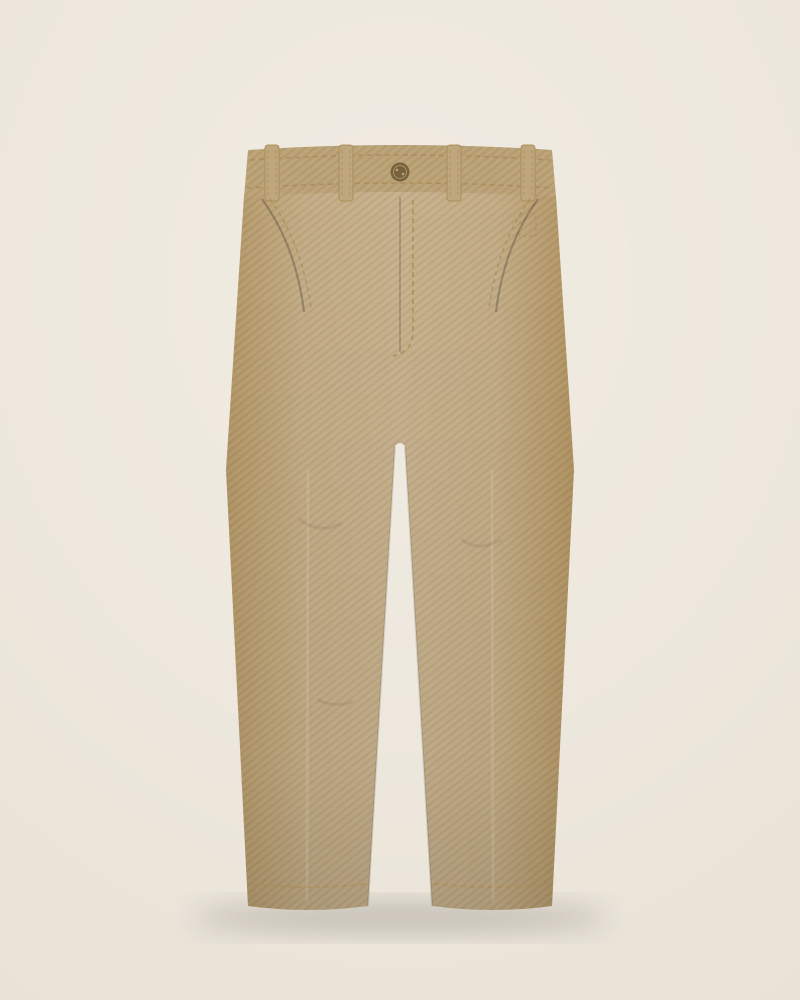
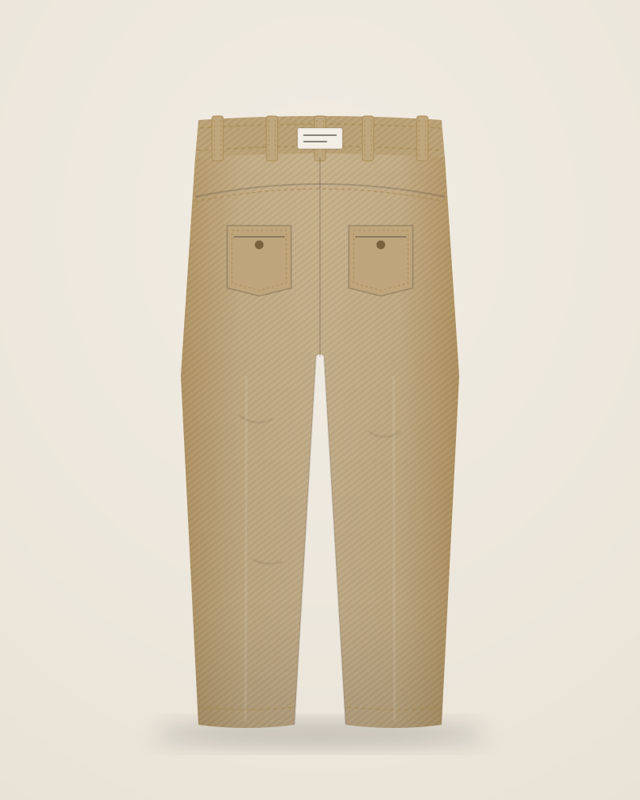
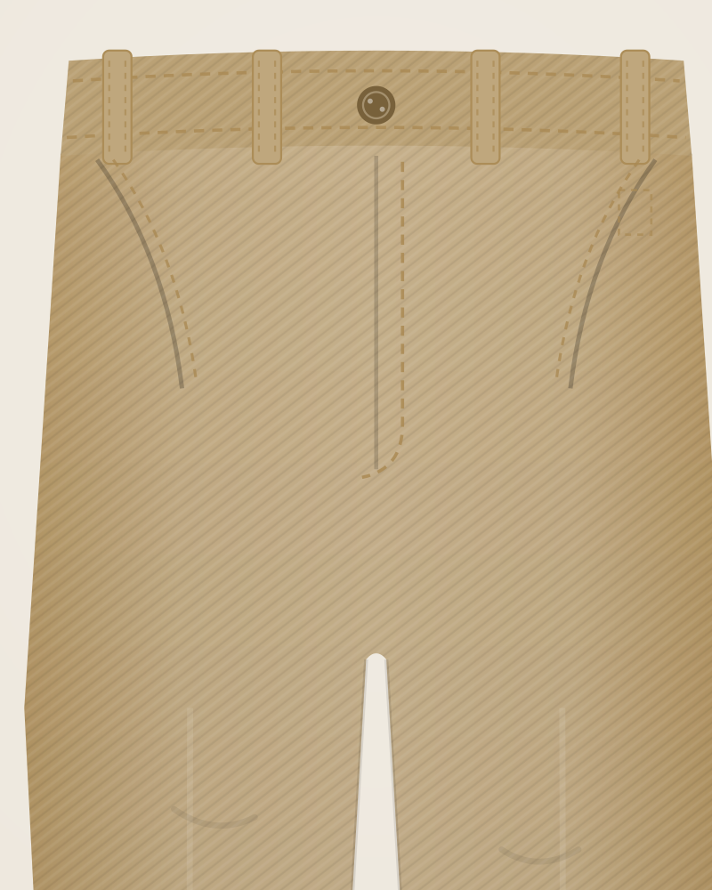
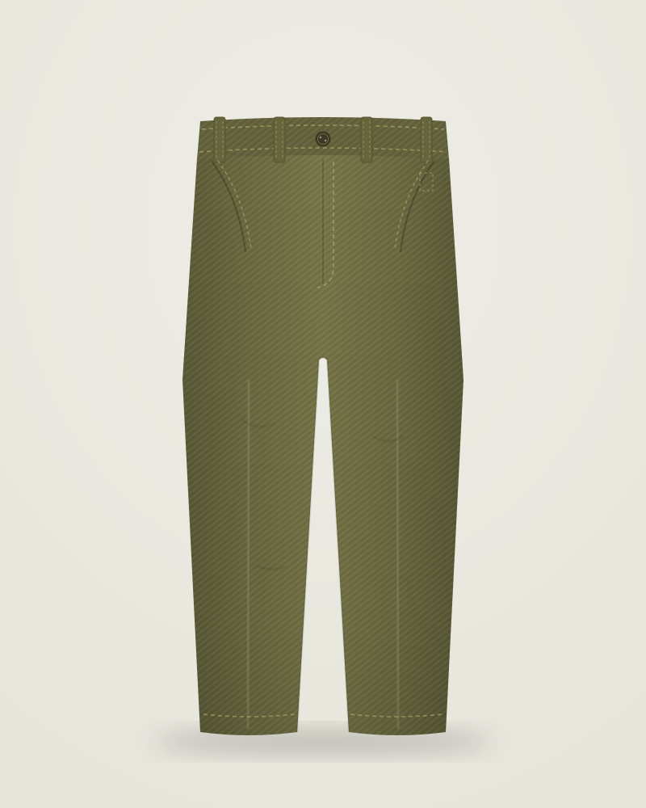
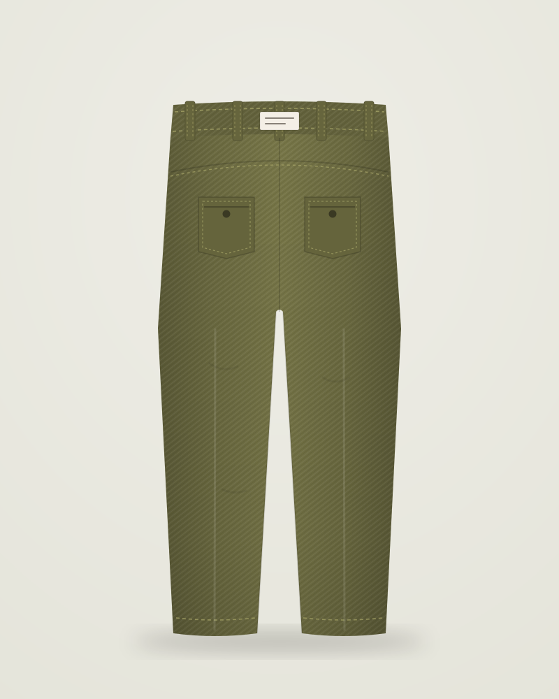
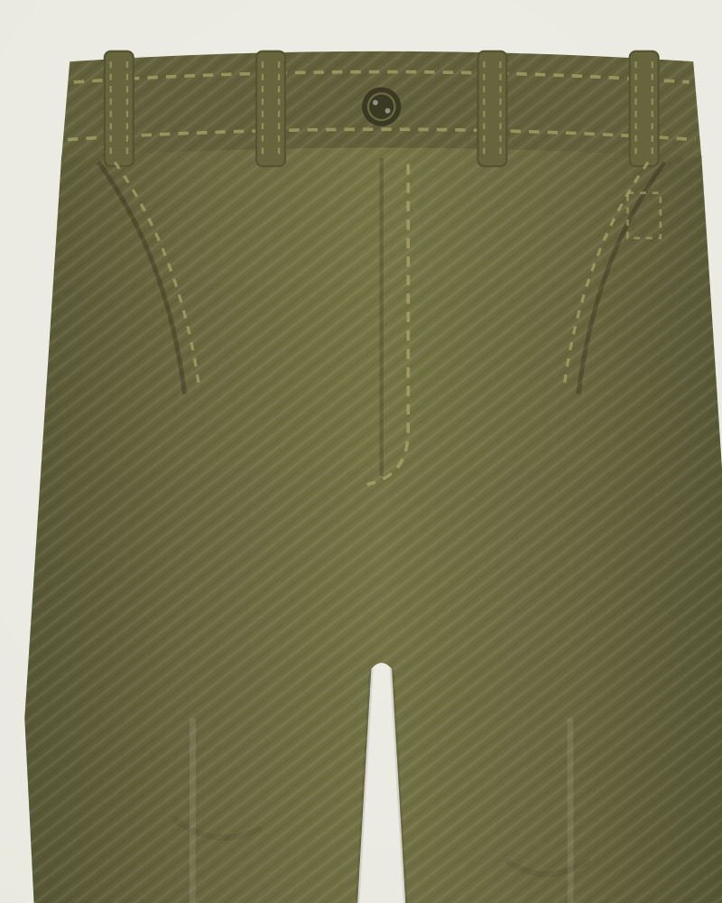
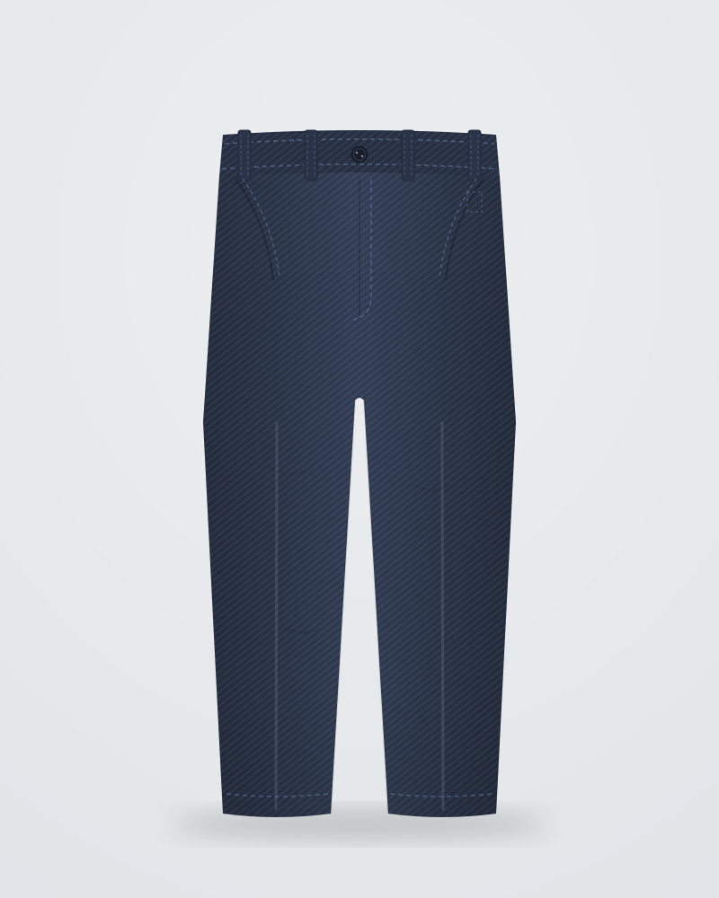
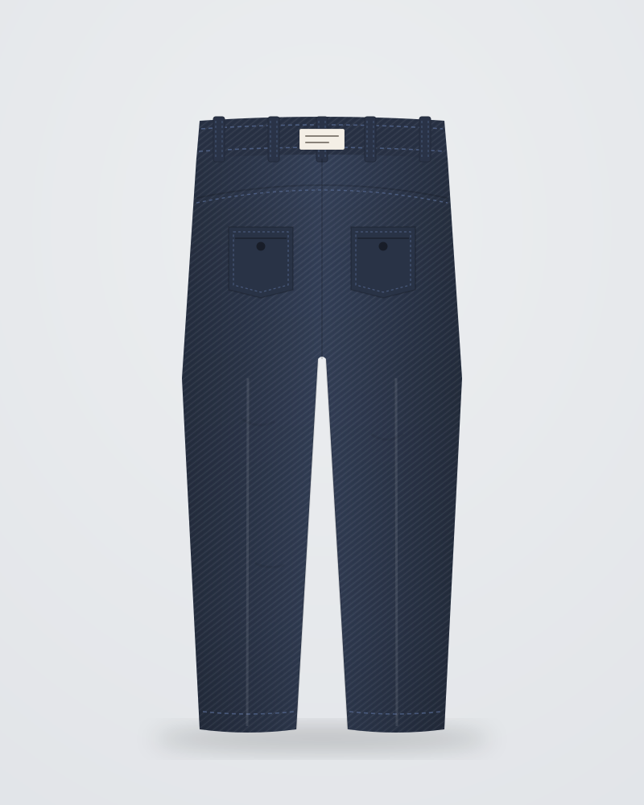
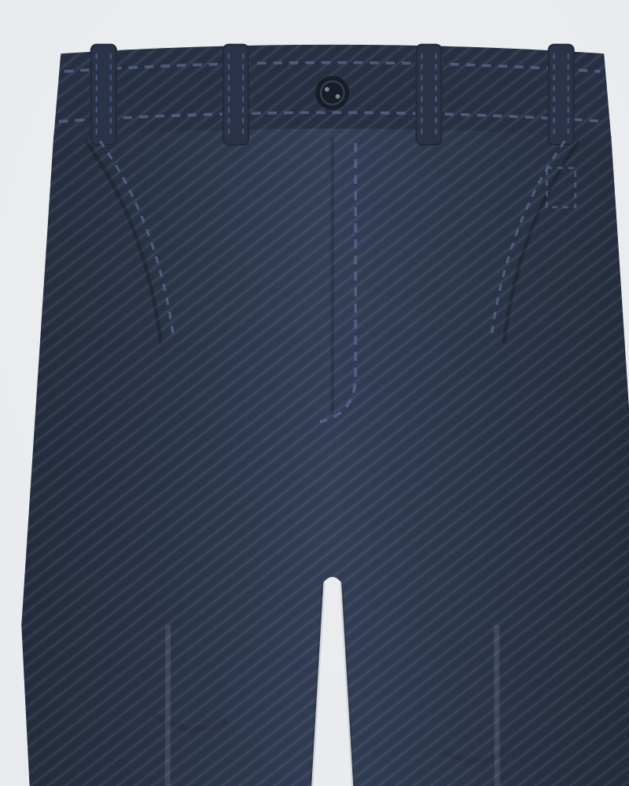
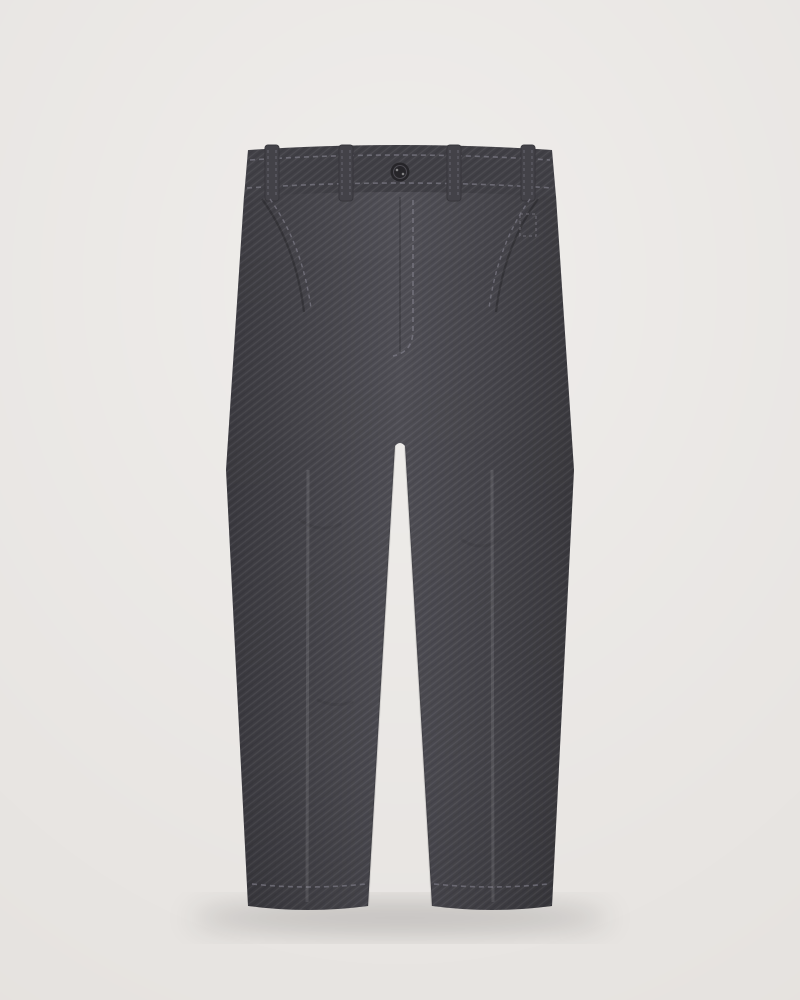
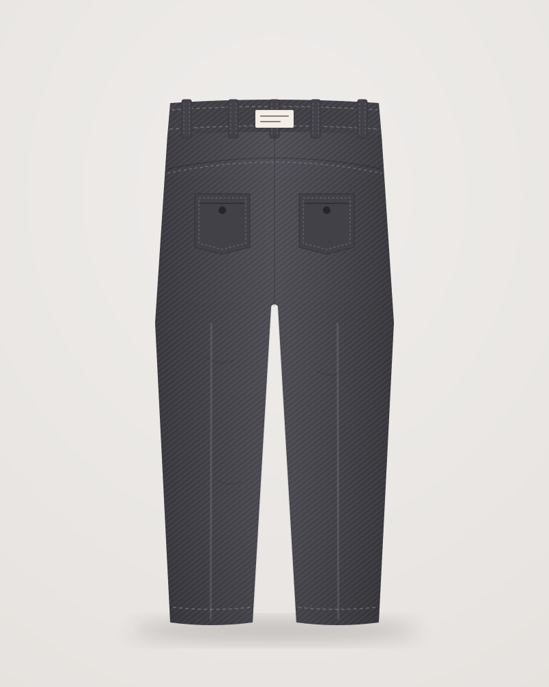
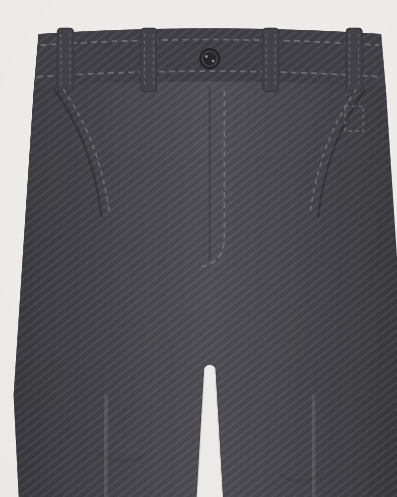
Tollhaven Trouser Co.
The Field Chino
Straight leg · 9 oz stretch twill
$98$0
Free US shipping over $100.Free returns and exchanges for 30 days.
Ships in 1 to 2 business days.
A straight-leg chino in a 9 oz cotton twill with 2% stretch, garment washed so it is soft from the first wear. Mid rise, a little room through the thigh, and a leg that sits clean over a boot or a sneaker.
Made in three lengths, so most people can skip the tailor.
Fit
Mid rise, straight leg, a little room through the thigh. To compare with a pair you already own, use the garment measurements in the size guide.
Fabric and care
98% cotton, 2% elastane, 9 oz twill, garment washed. Machine wash cold, hang dry. Expect under 1% shrinkage.
Shipping and returns
Ships from our warehouse in 1 to 2 business days. Free returns and exchanges for 30 days, unworn with tags.
The Field ChinoKhaki / 28 / Short
Rise
Mid, not low
10¾ in front rise in a 32, so it sits at the hip bone and stays there when you sit down.
Leg
Straight from the knee
8 in leg opening in a 32: clean over a boot, no pooling over a sneaker.
Length
Three inseams
30, 32 and 34 in, finished with a single-needle hem that can be let down about 1 in.
On a phone, scroll past the Add to cart button and a bar slides up from the bottom; it tucks away again at the store footer. Dates in the delivery line are worked out live for a warehouse in New York with a 2 PM cutoff.
02 · Questions it answers
Six things store owners keep asking about apparel product pages.
These come up again and again in Shopify's own community forum. Here's the call I made on each, and the setting that changes it if a store wants it the other way.
01
Where should the size guide go?
Right beside the label of the size option, where the question comes up. It opens a side panel (a bottom sheet on phones) so nobody loses their place, and it starts on a two-number size finder instead of a wall of tables.
Setting: Size guide link next to the size option
02
How do I show Short, Regular and Long?
As its own row of three, after the waist, with the inseam printed on each one. A 32 Long is two plain choices rather than one of 18 crammed into a single dropdown.
Setting: Show inseam under each length
03
Sold-out sizes: grey out, hide, or notify?
Crossed out but still tappable, so the range doesn't look picked over, and picking one swaps the button for an “email me when it's back” form. A combination that's never made gets a dashed outline and says so, so it isn't mistaken for a restock.
Setting: Sold-out sizes · show or hide
04
Is a sticky add-to-cart bar on mobile worth it?
Only after the real button scrolls off, and never over the footer. It shows the color and size picked; if no size is picked yet it scrolls back up to the sizes and says what's missing.
Setting: Sticky add-to-cart bar
05
Body measurements or garment measurements?
Both, on separate tabs with plain labels. Body tells you which size to pick; garment (laid flat, with a diagram) lets you compare with a pair you own. The chart says outright that a 32 measures 33½ in at the band.
Data: custom.size_chart metafield
06
Show shipping on the product page or at checkout?
Under the price: the free-shipping threshold, the returns line and an arrival window worked out from the warehouse's cutoff, weekends and closed days. The cart then shows how far off free shipping is.
Settings: threshold, time zone, cutoff, transit days, closed days
03 · The size chart
One metafield per product, typed once.
The guide, the finder and the inseam labels all read one JSON metafield on the product, custom.size_chart. A second style with different measurements gets its own chart; products without one simply don't show a guide.
Stored in inches; the guide switches to cm and back (it opens in cm unless the browser is set to US English)
Body ranges have gaps on purpose, so “between sizes” advice can kick in
The finder says when someone is outside the range instead of guessing
Length fit ranges drive the Short, Regular or Long pick
Every block can be moved, hidden or reworded in Online Store › Customize. This panel is drawn straight from the section's schema, so it lists exactly the settings in the file.
Default product
Template
Product (Tollhaven)
Title
Price
Shipping and delivery
Variant picker
Buy buttons
Description
Fit
Fabric and care
Shipping and returns
+ Add block
Section settings
Options
Color option name
Color
Images whose alt text matches the color are shown for that color.
Size option name
Waist
The size guide link sits next to this option.
Preselect the first size in stock
Off: shoppers pick a size on purpose, which cuts wrong-size orders.
Put the chosen variant in the address bar
Show "Only N left" at or below
3
Phones
Sticky add-to-cart bar
Appears once the main button scrolls away, hides at the footer.
Sticky bar button
Add to cart
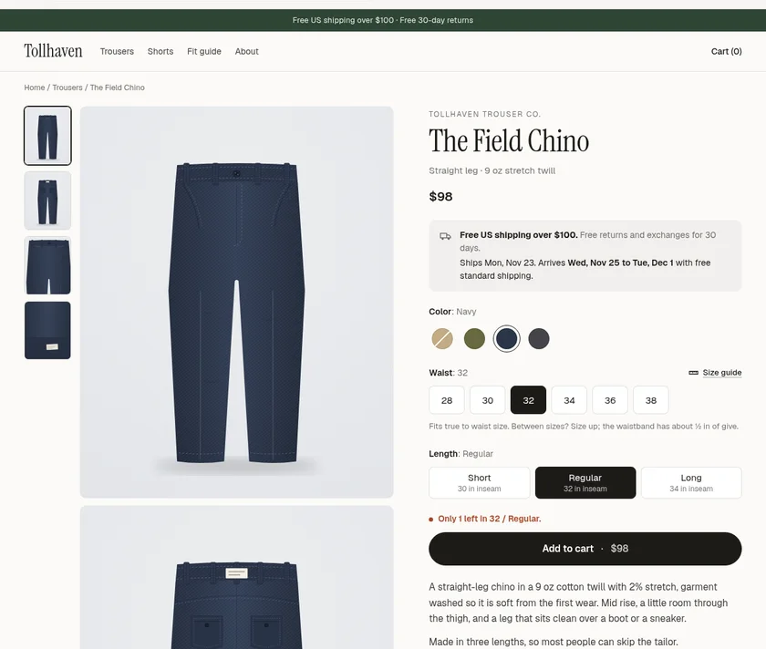
Shipping and delivery
Free shipping over (whole dollars)
100
Free shipping line
Free US shipping over $[amount].
[amount] is replaced with the number above.
Returns line
Free returns and exchanges for 30 days.
Warehouse time zone
America/New_York
An IANA name such as America/Chicago.
Same-day cutoff (24 h)
14
Transit, fastest (business days)
2
Transit, slowest (business days)
5
Days the warehouse is closed
2026-11-26, 2026-12-25, 2027-01-01
YYYY-MM-DD, separated by commas.
Text if the estimate can't be worked out
Ships in 1 to 2 business days.
7 section settings and 26 block settings across 7 block types.
05 · Files and tests
Small enough to read in one sitting.
The decisions (which sizes are sold out, what the button says, the size finder, delivery dates) live in one file with no page code in it, so they can be tested on their own. The section's markup is tested by rendering it with LiquidJS against the sample product.
theme/
sections/
th-main-product.liquid15 KBmarkup, blocks and schema
th-size-guide.liquid7.7 KBfinder, body and garment tabs
assets/
th-product-core.js8.3 KBthe decisions, no DOM
th-product.js19 KBwiring, gallery, sticky bar
th-product.css17 KBall styles, scoped th-
templates/
product.tollhaven.json1.7 KBblock order and defaults
tests/
core.test.mjsvariants, size finder, dates
render.test.mjsrenders the Liquid, checks schema
assets/th-product-core.jsvalueStates()
// For one option, how each value looks given what is picked in the others.// 'available' at least one matching variant can be bought// 'soldout' matching variants exist but none can be bought// 'none' no variant is made with this combinationfunction valueStates(product, selections, optionIndex) {
var values = optionValues(product, optionIndex);
var out = {};
values.forEach(function (value) {
var found = false, available = false;
product.variants.forEach(function (v) {
if (v.options[optionIndex] !== value) return;
for (var j = 0; j < v.options.length; j++) {
if (j === optionIndex) continue;
if (selections[j] != null && v.options[j] !== selections[j]) return;
}
found = true;
if (v.available) available = true;
});
out[value] = available ? 'available' : (found ? 'soldout' : 'none');
});
return out;
}
node --testreal output, captured when this page was built
✔ the sample has 68 variants: 4 colors x 6 waists x 3 lengths, less 38 Short in each color
✔ variantFor needs every option picked
✔ waist states follow the color picked
✔ a waist is only sold out for a length when that exact combination is
✔ 38 Short is "not made", which is different from sold out
✔ colors show as sold out only when nothing in the picked size is left
✔ the button asks for what is missing, in order
✔ size finder: inside a range
✔ size finder: between two sizes suggests the larger, mentions the smaller
✔ size finder: top of a size mentions the next one up
✔ size finder: works in cm
✔ size finder: out of range says so instead of guessing
✔ measurements print as fractions in inches and whole cm
✔ delivery: before the cutoff on a weekday ships today
✔ delivery: after the cutoff ships the next business day
✔ delivery: the cutoff is in the warehouse time zone, not the shopper's
✔ delivery: a closed day is skipped for shipping too
✔ delivery: clock change weekend still counts days right
✔ money and free shipping
✔ schema is valid JSON and every block type has a name
✔ every setting the Liquid reads is defined in the schema
✔ the template only uses blocks and settings the schema has
✔ one radio per option value, all tied to the product form
✔ sizes start unpicked by default so nobody buys a size by accident
✔ with preselect on, the first available size is checked
✔ length pills show the inseam
✔ product JSON, low-stock list and size chart are embedded and parse
✔ only the current color's images are shown at first
✔ size guide: body and garment tables are separate and labelled
✔ without JavaScript there is still a plain size select
✔ back-in-stock form is a separate contact form, not nested in the cart form
✔ turning the sticky bar off removes it
✔ a product with no size chart renders without the guide
ℹ tests 33ℹ suites 0ℹ pass 33ℹ fail 0ℹ cancelled 0ℹ skipped 0ℹ todo 0
06 · Install
About an hour on a duplicate theme.
Duplicate the live theme and work on the copy.
Upload the files from the zip into sections/, snippets/, assets/ and templates/ (Edit code › Add a new file, or Shopify CLI).
Add the metafield: Settings › Custom data › Products › custom.size_chart, type JSON, and paste the example chart.
Set swatch colors at the top of th-product.css, one line per color.
Name the images so their alt text starts with the color (“Olive · Back view”). That's how the gallery follows the color.
Assign the template “tollhaven” to the product, check it on a phone, then publish.
Take the files.
The section, both snippets, the JS and CSS, the template, an example size chart and install notes. Source and tests are on GitHub.